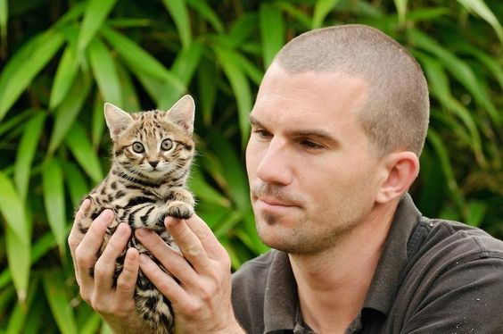

The rusty-spotted cat (Prionailurus rubiginosus) is one of the cat family's smallest members, of which historical records are known only from India and Sri Lanka. In 2012, it was also recorded in the western Terai of Nepal. Since 2016, the global wild population is listed as Near Threatened on the IUCN Red List as it is fragmented and affected by loss and destruction of its prime habitat, deciduous forests.

The rusty-spotted cat has a short reddish grey fur over most of the body with rusty spots on the back and flanks. Four blackish lines run over the eyes, and two of them extend over the neck. Six dark streaks are on each side of the head, extending over the cheeks and forehead. Its chin, throat, inner side of the limbs and belly are whitish with tiny brownish spots. It has a rusty band on the chest. Its paws and tail are uniform reddish grey.
It is the smallest wild cat in Asia and rivals the black-footed cat as the world's smallest wild cat. It is 35 to 48 cm (14 to 19 in) in length, with a 15 to 30 cm (5.9 to 11.8 in) tail, and weighs only 0.9 to 1.6 kg (2.0 to 3.5 lb). The bushy tail is about half the length of the body.